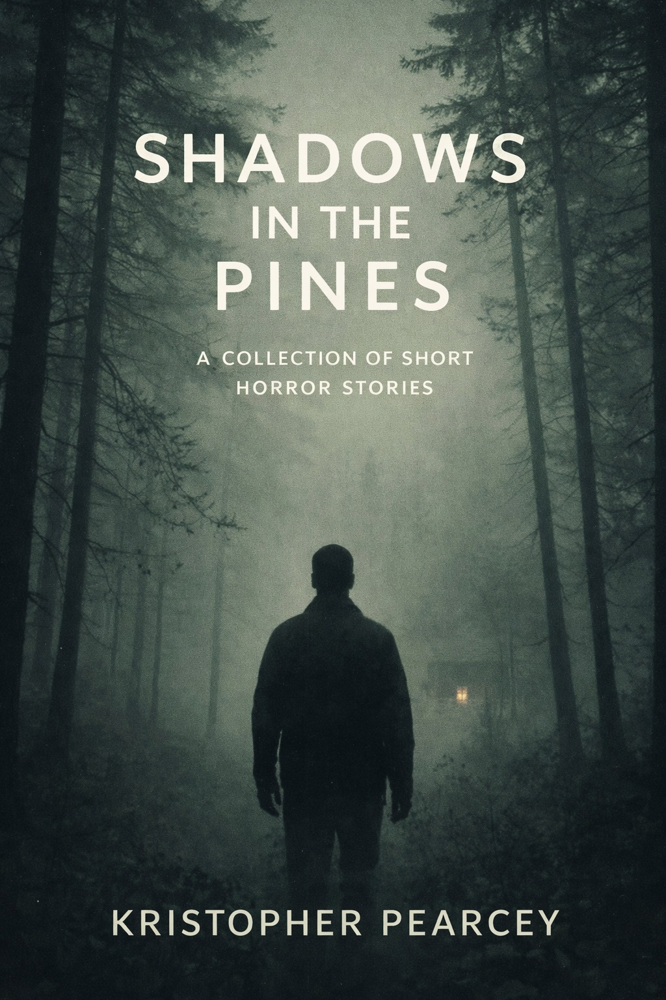

Featured collection
Shadows in the Pines
A collection of short horror stories drawn from uneasy edges: deep woods, familiar roads, quiet rooms, and the strange things waiting just beyond them.
Literary horror and contemporary weird fiction.
Stories of isolation, dread, and quiet wrongness — where the familiar thins, and something older begins to show through.